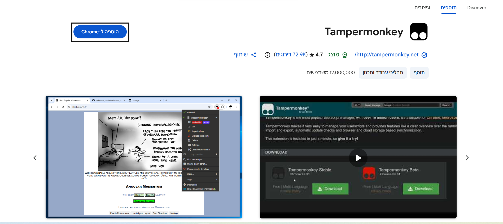
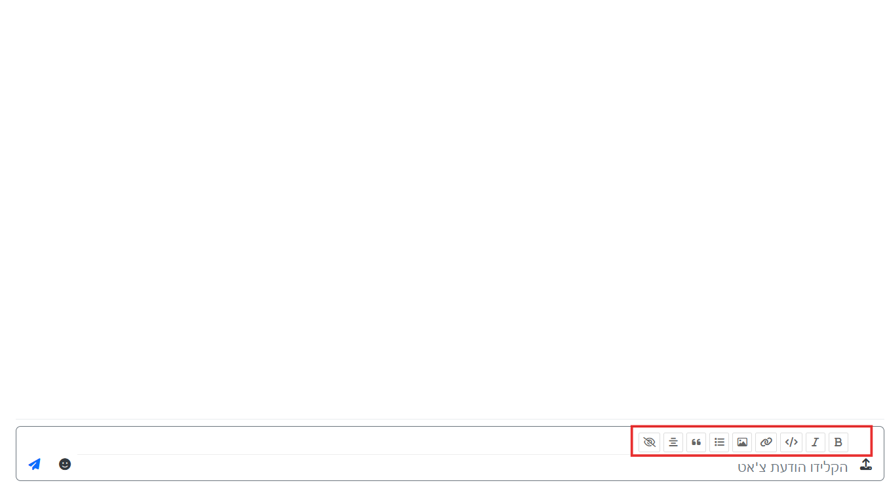

מדריך והתקנת תוסף לתגובה מהירה בפורום מתמחים טופ
הסבר קצר על הסקריפט:
הסקריפט "תגובה מהירה למתמחים טופ" הוא כלי עזר חכם שנועד לשדרג משמעותית את חווית הגלישה והכתיבה בפורום. הוא חוסך זמן ומאמץ על ידי הוספת חלונית תגובה מעוצבת וקלה לשימוש ישירות בתחתית כל נושא. בעזרתו, ניתן להגיב, לצטט ולעצב הודעות במהירות הבזק, מבלי צורך לגלול, להמתין לעליית חלונות או לפתוח את העורך המלא.
מה הסקריפט כולל:
- חלונית תגובה זמינה תמיד: תיבת טקסט נקייה ואלגנטית הממוקמת בסוף כל אשכול, המאפשרת כתיבה רציפה מבלי לעזוב את שטף הקריאה
- כפתור "צטט לתגובה" צף: ברגע שתסמנו טקסט כלשהו בעמוד, יופיע כפתור חכם. לחיצה עליו תעתיק מיד את הטקסט אל תוך תיבת התגובה שלכם כציטוט תקני ומוכן.
- תיוג משתמשים אוטומטי: הסקריפט חכם מספיק כדי לזהות מי כתב את ההודעה האחרונה בנושא, ובעת השליחה יתייג אותו אוטומטית (כולל המרת רווחים למקפים הנדרשת במערכת).
- כסרגל כלים לעיצוב מהיר: כלים מובנים לעיצוב נוח של הטקסט, כולל הדגשה, טקסט נטוי, קו חוצה, הוספת קישורים, בלוקים של קוד וספוילרים חסויים (||ספוילר||).
מדריך להתקנה:
-
1) הכנסו לכאן והתקינו את התוסף של Tampermonkey:

-
2) לאחר מכן תיכנסו לכאן והתקינו את הסקריפט.
בהצלחה!!!
תמונות:

← חזרה לדף הראשי